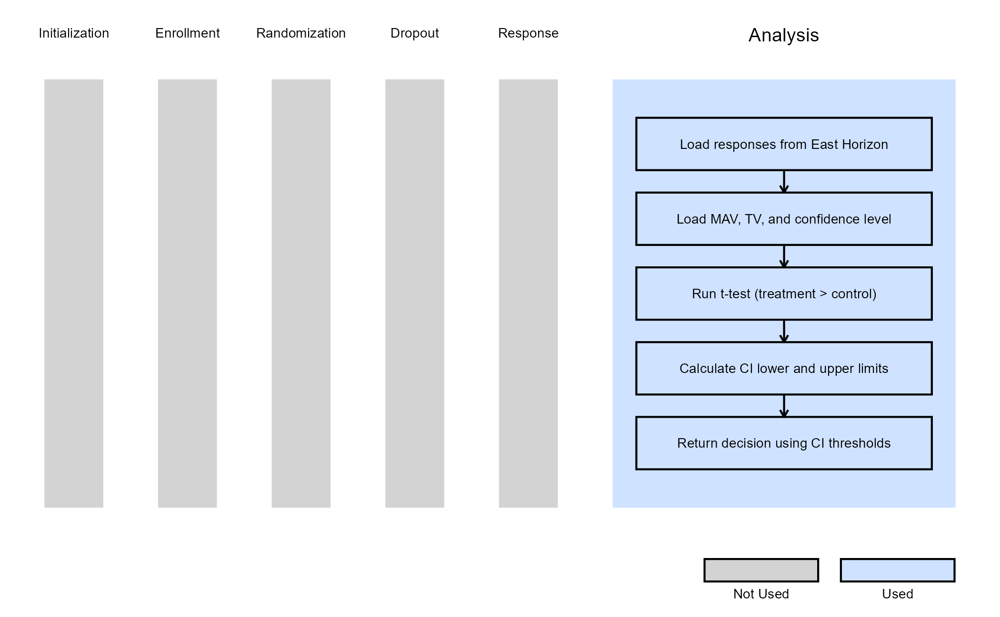

2-Arm, Continuous Outcome - Analysis
Shubham Lahoti, J. Kyle Wathen, and Gabriel Potvin
January 09, 2026
2ArmNormalOutcomeAnalysis.RmdThis example is related to the Integration Point: Analysis - Continuous Outcome. Click the link for setup instructions, variable details, and additional information about this integration point.
- Study objective: Two Arm Confirmatory
- Number of endpoints: Single Endpoint
- Endpoint type: Continuous Outcome
- Task: Any
- Statistical Design:
- Fixed Sample or Group Sequential for Examples 1, 2, 3
- Group Sequential with Sample Size Re-Estimation for Example 4
Note: Examples 1, 2, and 3 are compatible with both Fixed Sample and Group Sequential statistical designs. The R code automatically detects whether interim look information (LookInfo) is available and adjusts the analysis parameters accordingly.
Introduction
The following examples illustrate how to integrate new analysis capabilities into East Horizon or East using R functions in the context of a two-arm trial. In each example, the trial design includes a standard-of-care control arm and an experimental treatment arm, with patient outcomes assumed to follow a normal distribution. The design includes two interim analyses (IA) and one final analysis (FA). At each IA, an analysis is conducted which may lead to early stopping for efficacy or futility, depending on the predefined design criteria.
Once CyneRgy is installed, you can load this example in RStudio with the following commands:
CyneRgy::RunExample( "2ArmNormalOutcomeAnalysis" )Running the command above will load the RStudio project in RStudio.
East Workbook: 2ArmNormalOutcomeAnalysis.cywx
RStudio Project File: 2ArmNormalOutcomeAnalysis.Rproj
In the R directory of this example you will find the following R files:
AnalyzeUsingEastManualFormulaNormal.R - Contains a function named AnalyzeUsingEastManualFormula that computes the two-sample Z-statistic for a continuous endpoint using Formulas of Appendix Q.3.3 from the East manual.
AnalyzeUsingTTestNormal.R - Contains a function named AnalyzeUsingTTest that performs the analysis using R’s built-in
t.test()function.AnalyzeUsingMeanLimitsOfCI.R - Contains a function named AnalyzeUsingMeanLimitsOfCI that bases interim and final decisions on confidence interval limits rather than East Horizon-provided boundaries. The function uses user-defined parameters (MAV, TV, and confidence level) to implement a Go / No-Go decision framework.
AnalyzeNormalSSR.R - Contains a function named AnalyzeNormalSSR that extends the standard continuous analysis to support conditional power–based sample size re-estimation (SSR) in a group sequential design.
Example 1 - Using Formulas Q.3.3 from the East manual
This example is related to this R file: AnalyzeUsingEastManualFormulaNormal.R
In this example, the analysis is customized by replacing the default method with a user-defined calculation based on formulas of the Appendix Q.3.3 - Parallel Design: Difference of Means from the East manual.
Estimate of the pooled standard deviation:
Where:
- and are the number of patients in the treatment and control groups, respectively.
- and are the standard deviations of responses in the treatment and control groups, respectively.
- is the total number of patients.
Test Statistic:
Where:
- and are the means of responses in the treatment and control groups, respectively.
- is the estimate of the pooled standard deviation.
- and are the numbers of patients in the treatment and control groups, respectively.
The objective is to demonstrate a straightforward way to modify both the analysis and decision-making process. The computed test statistic is compared to the efficacy boundary provided by East Horizon or East as input. This example does not include a futility rule and does not use any user-defined parameters.
The figure below illustrates where this example fits within the R integration points of Cytel products, accompanied by a flowchart outlining the general steps performed by the R code.

Example 2 - Using the t.test() Function in R
This example is related to this R file: AnalyzeUsingTTestNormal.R
This example utilizes the base R t.test() function to
perform the interim and final analyses. The resulting t-statistic is
compared against the efficacy boundary provided by East Horizon or East.
Like Example 1, this example does not include a futility rule and does
not use any user-defined parameters.
The figure below illustrates where this example fits within the R integration points of Cytel products, accompanied by a flowchart outlining the general steps performed by the R code.

Example 3 - Utilization of Confidence Interval Limits for Go/No-Go Decision-Making
This example is related to this R file: AnalyzeUsingMeanLimitsOfCI.R
In many Phase II trials, Go/No-Go decisions are made based on whether a treatment shows sufficient promise to justify further development. These decisions are often guided by two key thresholds:
- Minimum Acceptable Value (MAV): The smallest treatment effect considered meaningful.
- Target Value (TV): A highly desirable treatment effect based on clinical or strategic considerations.
This example demonstrates how to approximate probabilistic
decision-making using frequentist confidence intervals (CIs), ignoring
the boundaries provided by East Horizon or East in favor of a CI-based
logic. We use the function t.test() from base R to analyze
the data and compute the desired confidence intervals. If the treatment
difference is likely to exceed the MAV, a Go decision is made. If not,
and it is unlikely to exceed the TV, a No-Go decision is made.
Specifically:
At Interim Analysis
- Let LL and UL be the lower and upper limits of the confidence interval for the treatment effect.
- If
- If
- Otherwise Continue to the next analysis
At Final Analysis
- If
- Otherwise No-Go
In this example, the team has resources for 100 patients and is comparing two fixed designs and one group sequential design with a single interim analysis. Refer to the table below for the definitions of the user-defined parameters used in this example.
| User parameter | Definition |
|---|---|
| dMAV | Minimum Acceptable Value: the smallest treatment effect considered clinically meaningful to warrant further development. |
| dTV | Target Value: the desired treatment effect that would represent a strong clinical benefit or strategic advantage. |
| dConfLevel | Confidence Level: the level of confidence used to construct the confidence interval for Go/No-Go decision-making (e.g., 0.80 for an 80% CI). |
Note: In this example, the boundary information that
is computed in East Horizon or East is ignored. User-defined parameters
and the function t.test() from base R are used to analyze
the data and compute the desired confidence intervals.
The figure below illustrates where this example fits within the R integration points of Cytel products, accompanied by a flowchart outlining the general steps performed by the R code.

Option 1 - Fixed Design (80% CI)
The decisions are made as follows:
- Go: If there is at least a 90% probability that the treatment effect exceeds MAV = 0.1 (approximated by lower bound of 80% CI > MAV).
- No-Go: If a Go decision is not made, and there is less than a 10% probability that the effect exceeds TV = 0.3 (approximated by upper bound of 80% CI < TV).
This framework can be approximated using frequentist logic by applying the decision rules to an 80% confidence interval assuming to range from the 10th to the 90th percentile.
Refer to the table below for the values of the user-defined parameters used in this option.
| User parameter | Value |
|---|---|
| dMAV | 0.1 |
| dTV | 0.3 |
| dConfLevel | 0.8 |
Option 2 - Fixed Design (70% CI)
The decisions are made as follows:
- Go: If there is at least an 85% probability that the treatment effect exceeds MAV = 0.1 (approximated by lower bound of 70% CI > MAV).
- No-Go: If a Go decision is not made, and there is less than a 15% probability that the effect exceeds TV = 0.3 (approximated by upper bound of 70% CI < TV).
This framework can be approximated using frequentist logic by applying the decision rules to an 80% confidence interval assuming to range from the 15th to the 85th percentile.
Refer to the table below for the values of the user-defined parameters used in this option.
| User parameter | Value |
|---|---|
| dMAV | 0.1 |
| dTV | 0.3 |
| dConfLevel | 0.7 |
Option 3 - Group Sequential Design
In this option, an interim analysis at 50 patients is included with an option to stop for early Go or No-Go decision.
The decisions are made as follows:
- Go (or continue to the next analysis if IA): If there is at least an 92.5% probability that the treatment effect exceeds MAV = 0.1 (approximated by lower bound of 85% CI > MAV).
- No-Go (or stop for futility if IA): If a Go decision is not made, and there is less than a 7.5% probability that the effect exceeds TV = 0.3 (approximated by upper bound of 85% CI < TV).
This framework can be approximated using frequentist logic by applying the decision rules to an 85% confidence interval assuming to range from the 7.5 to the 92.5th percentile.
Refer to the table below for the values of the user-defined parameters used in this option.
| User parameter | Value |
|---|---|
| dMAV | 0.1 |
| dTV | 0.3 |
| dConfLevel | 0.85 |
Example 4 - Analysis With Sample Size Re-Estimation
This example is related to this R file: AnalyzeNormalSSR.R
This example illustrates how to customize the analysis when using
Statistical Design = Group Sequential with Sample Size Re-Estimation
in East Horizon. The key difference from the previous examples is that
the analysis function is responsible not only for producing a test
statistic and interim decision, but also for computing a re-estimated
total number of completers based on interim results. This is achieved
using a conditional power–based SSR approach, which allows the trial to
increase its planned number of completers when interim results fall
within a “promising zone”.
Test Statistic:
A standardized Z-statistic is computed based on the observed difference in mean outcomes between the experimental and control arms:
where and are the sample means in the experimental and control arms, and are the corresponding sample variances, and and are the numbers of observed patients in each arm at the current look.
Conditional Power:
Using the observed Z-statistic, the information fraction at the current look, and the efficacy boundary provided by East Horizon, the conditional power is computed. This represents the probability of eventually crossing the final efficacy boundary, given the interim data and assuming the currently observed effect persists for the remainder of the trial.
Sample Size Re-Estimation (SSR):
Based on the computed conditional power, the total number of completers is re-estimated using one of two SSR rules:
| Condition | Rule |
|---|---|
The SSR function scale for promising zone selected in East Horizon
is “Continuous” (AdaptInfo$SSRFuncScale == 0) |
If the conditional power falls between the lower and upper
promising-zone thresholds selected in East Horizon
(AdaptInfo$PromZoneMin and
AdaptInfo$PromZoneMax), the maximum number of completers is
multiplied by the maximum sample size multiplier input specified in East
Horizon (AdaptInfo$MaxSSMultInp$MaxSSMult). |
The SSR function scale for promising zone selected in East Horizon
is “Step” (AdaptInfo$SSRFuncScale == 1) |
The conditional power is mapped to intervals specified in East
Horizon (AdaptInfo$MaxSSMultInp$From,
AdaptInfo$MaxSSMultInp$To), each associated with a specific
sample size multiplier specified in East Horizon
(AdaptInfo$MaxSSMultInp$MaxSSMult). |
If the conditional power falls outside the promising zone, the original planned number of completers is retained.
Finally, the Z-statistic is compared against the efficacy boundary
provided by East Horizon. At interim looks, crossing the boundary
results in an early efficacy decision, while at the final look a lack of
boundary crossing results in a futility decision. Both the decision and
the re-estimated total number of completers
(ReEstCompleters) are returned to East Horizon.
The figure below illustrates where this example fits within the R integration points of Cytel products, accompanied by a flowchart outlining the general steps performed by the R code.